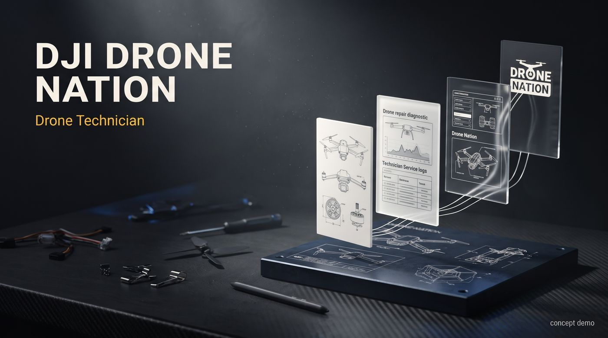
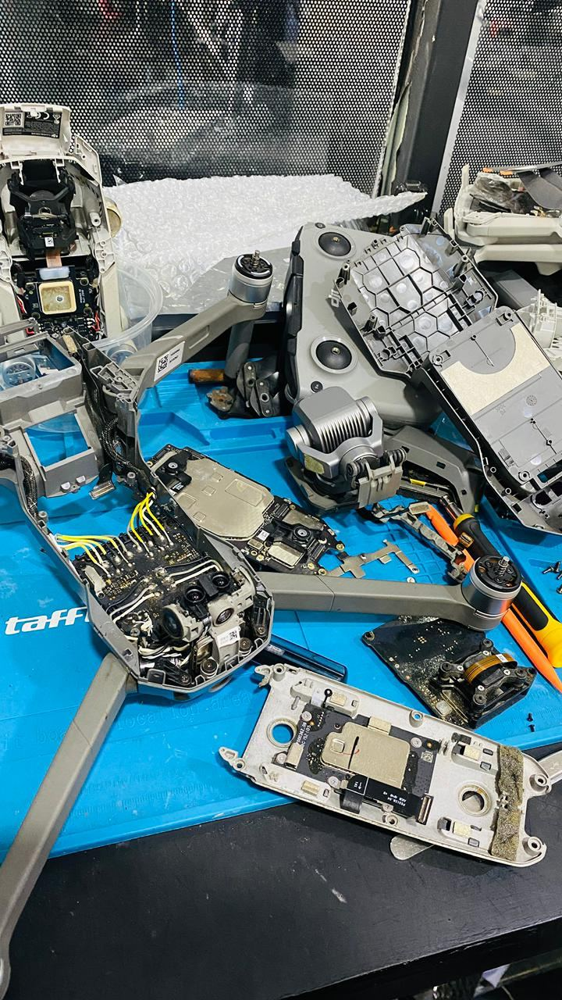
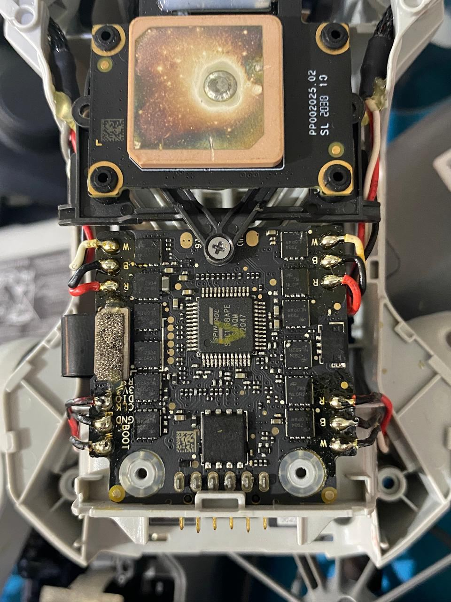
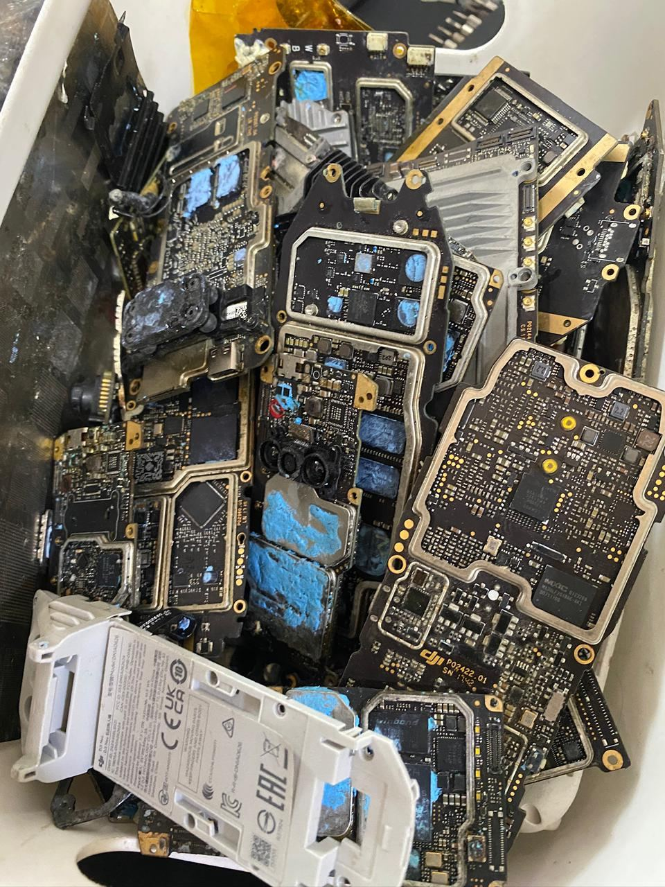
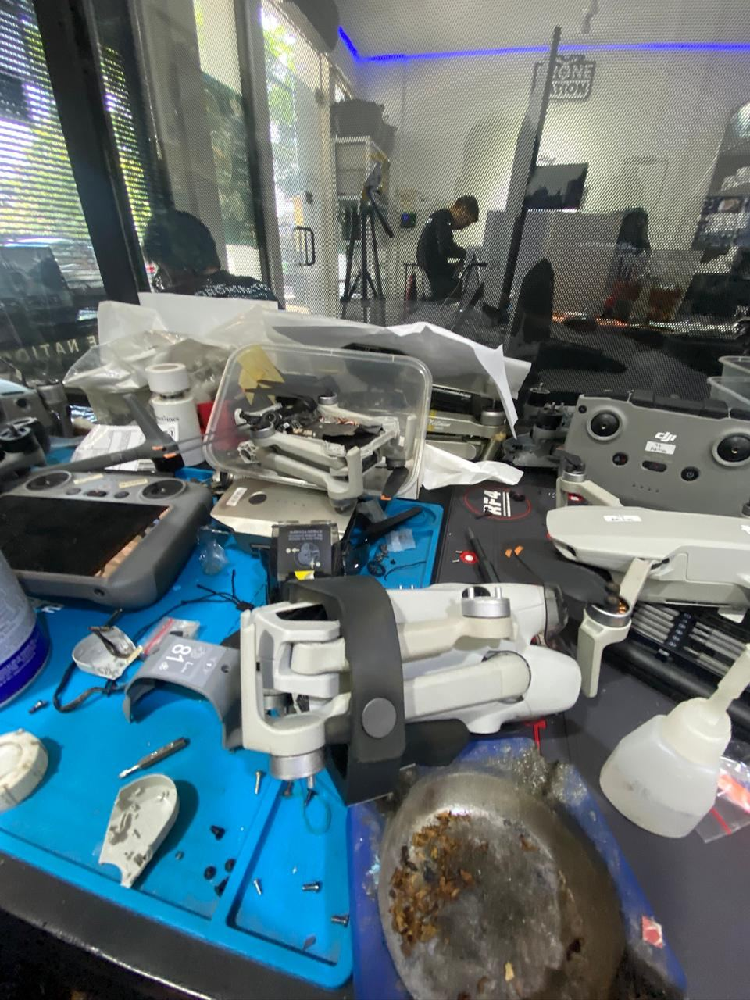
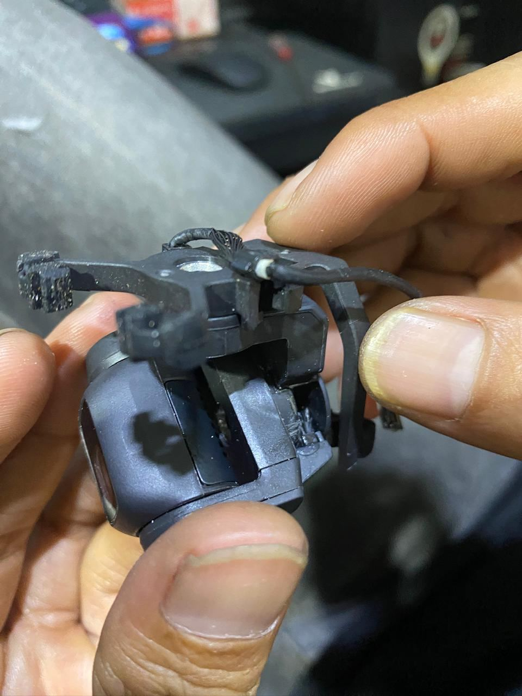
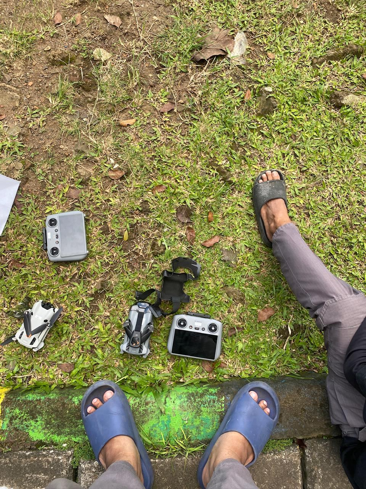
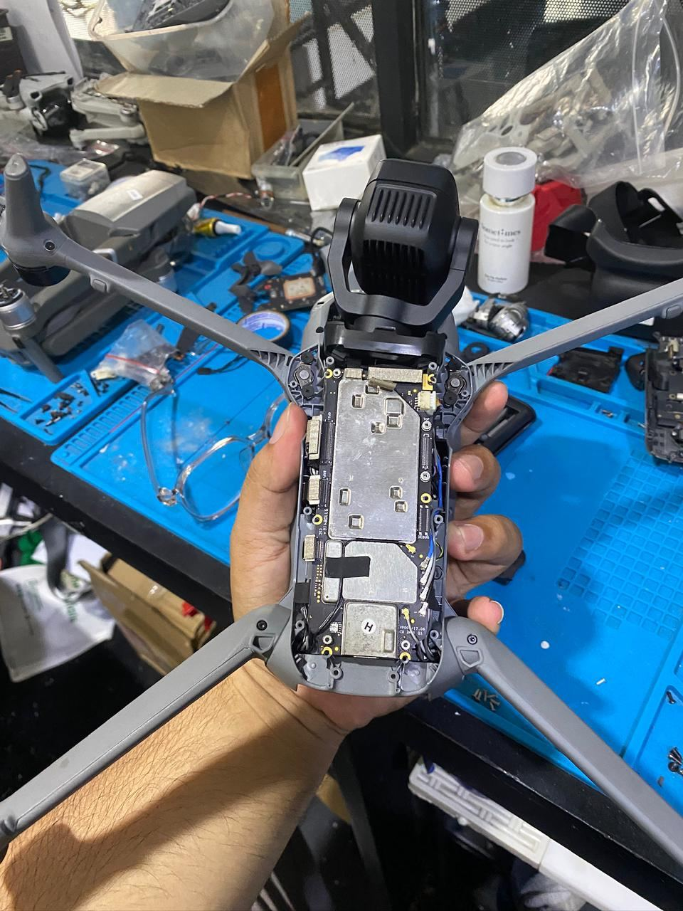
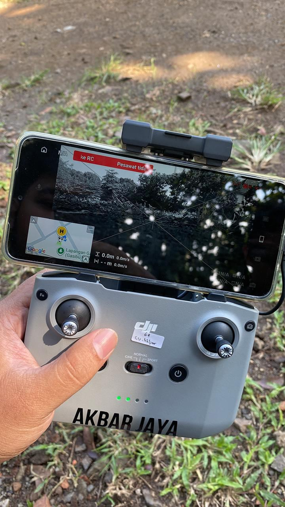
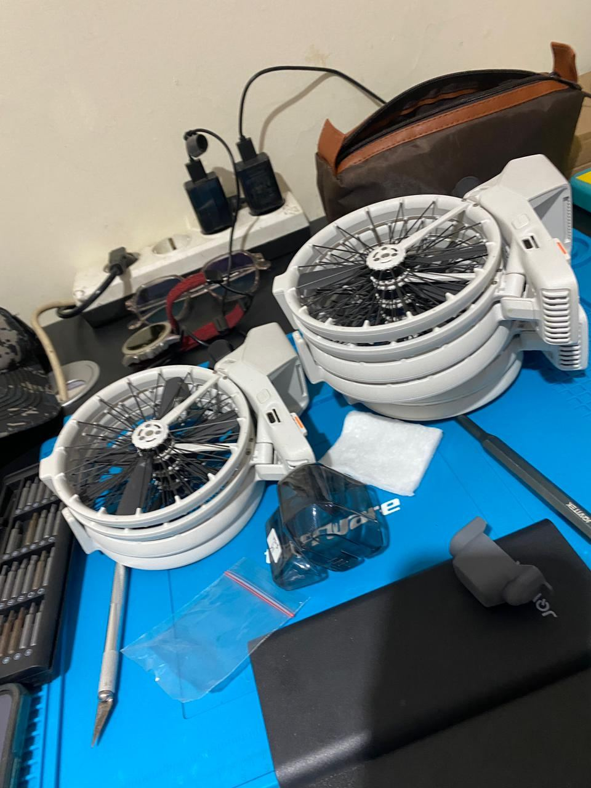

Work experience documentation
Drone Nation — Drone Technician
Four months on a drone repair bench in Bandung: diagnosing, dismantling, and returning DJI drones to the air.

Work experience documentation
Four months on a drone repair bench in Bandung: diagnosing, dismantling, and returning DJI drones to the air.

Drone Nation services and repairs consumer and prosumer drones — mostly DJI. My station was the repair bench. Every broken unit that came in landed there first: crash damage, water damage, gimbals that twitched instead of stabilising, motors that refused to spin, batteries that wouldn't hold a charge.
The job is diagnostics wearing a technician's overalls. The customer says "it won't fly" — my job was to find out which of a dozen possible causes it actually was, fix that, and prove the fix with a test flight before the unit left the shop.
Start from the symptom: power-on behaviour, app connection, error codes — then down to board-level inspection to find the real cause, not just the loudest one.
The part crashes hit first. Yaw arms, ribbon cables and camera modules — replaced, re-seated, and calibrated until the horizon held steady.
Replacing burned ESCs and worn motors, checking phases and connectors, and spin-up tests before the shell goes back on.
Reflash and configuration, compass and IMU calibration, firmware updates — the unglamorous steps that decide whether a repaired drone flies straight.
Inspecting packs for swelling and cell health, safe charging and storage — the quiet work that prevents the next failure.
Reassembly, app and telemetry checks, and a test flight. The repair isn't done when it powers on — it's done when it flies.
Photos from the bench — the units, the innards, and the process.








